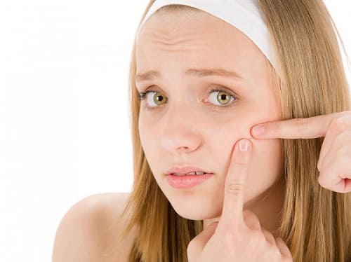
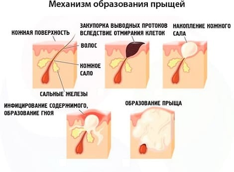
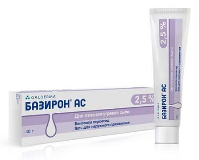
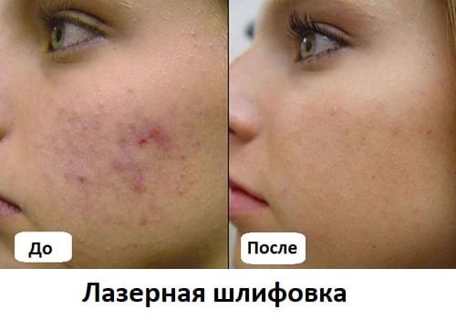

Помните, как сами ходили с прыщами, будучи подростком? Это очень волнующая тема, особенно для подростков, озабоченных своей внешностью. Угри — наиболее распространенное заболевание кожи, с которым подростки обращаются к врачу. Кроме того, это момент в воспитании, когда вы можете ярко проявить себя. Чем больше вы знаете о причинах образования угрей, тем лучше сможете помочь своему ребенку пережить этот период. Прыщи пройдут, а его доверие к вам останется навсегда. Вот почему мы хотим дать вам наиболее полное представление о причинах появления угрей и о том, как помочь подростку в это время. Итак, начнем.
ПРИЧИНЫ
Давайте рассмотрим развитие угревой сыпи — так вы и ваш подросток (читайте это вместе) лучше поймете, откуда берутся прыщи.
Кожа становится более жирной. Сальные железы находятся у основания волосяного стержня и больше всего их на лице, груди и верхней части спины, поэтому в этих местах чаще всего и образуются угри. Эти железы вырабатывают так называемое кожное сало, очень важное для здоровья кожи. В детстве они малоактивны, поэтому кожа у детей не жирная и очень нежная. С наступлением пубертатного периода гормоны (андрогены) активируют эти железы, и они начинают вырабатывать больше кожного сала. У некоторых детей и подростков сальные железы более чувствительны к гормонам и продуцируют больше сала — поэтому угри у них протекают тяжелее и их больше, чем у ровесников. Повышенная чувствительность к гормонам также объясняет, почему степень выраженности угревой сыпи имеет склонность наследоваться. У вашего подростка будет примерно столько же угрей, сколько было у мамы или у папы. Секреция кожного сала достигает пика в пубертатный период и постепенно снижается после 20 лет.
Железы закупориваются. Весь вырабатываемый железой избыточный кожный жир пытается выйти наружу через крошечные канальцы, которые называют протоками. На следующей стадии формирования угрей эти протоки забиваются густым жиром и отмершими клетками кожи.
Угри с черными и белыми головками. Закупоренные протоки — комедоны — выглядят как черные или белые точки. Вопреки распространенному мнению, черный цвет вызван не грязью, а окислением меланина — пигмента, обычно присутствующего в коже.
В угри с черными и белыми головками попадает инфекция. Когда любой продукт секреции желез тела — неважно, содержит он жир или воду, — застаивается в протоках, в нем развивается инфекция; так происходит всегда. Это следующая и самая тяжелая стадия угревой сыпи: угри превращаются в прыщи. Бактерии, называемые P-acnes, которые всегда живут на коже, попадают в забитые протоки, вызывая воспалительную реакцию: кожа вокруг головки угря становится красной, отекает, превращая угорь в прыщ.

ЧТО ДЕЛАТЬ?
Теперь, когда вы понимаете, как образуются угри, легко понять, что подросток и врач могут сделать, чтобы избавиться от них. Вы ничего не поделаете с повышенным образованием кожного жира, но это пройдет, как и большинство подростковых физических и психологических проблем.
Зато вы можете помешать формированию угрей и инфицированию их. Персональный план действий подростка должен быть направлен на то, чтобы:
СОВЕТ ДОКТОРОВ СИРС: НЕ ВЫДАВЛИВАЙТЕ УГРИ! О, как заманчиво сорвать вот этот созревший нарывчик своими грязными ногтями! Не делайте этого! Как правило, это заканчивается попаданием инфекции в окружающие ткани, следствием будет увеличение и усиление воспаления, что приведет к образованию некрасивых рубцов. Пусть ваш врач или косметолог удалит головку созревшего угря — он знает, как. А вы научитесь у него, как правильно взять стерильную иглу и когда и как удалить созревший угорь. |
Шаг 1: Поговорите с подростком. Большинство подростков не хотят, чтобы им читали курс по дерматологии или об угрях. Они всего лишь хотят избавиться от угрей. Но все же стоит дать им общее представление о правильном уходе за кожей.
СОВЕТ ДОКТОРОВ СИРС: НАЙДИТЕ ПОДХОДЯЩИЙ ПРЕПАРАТ ДЛЯ СВОЕГО РЕБЕНКА У одного подростка в нашей семье были серьезны проблемы с угрями. Он потратил три года, пробуя различные средства за исключением Аккутана (изотретиноин — форма витамина А) и обычно ходил к дерматологу для пилинга кожи лица. Хотя наблюдалось некоторое улучшение, проблема все же оставалась на уровне, который мы расцениваем как среднетяжелый. Мы узнали о новом методе лечения, где использовались натуральные продукты наряду с местным лечением кожи лица, причем в более мягком варианте. Значительный эффект был заметен сразу же, а через три месяца результат был весьма существенным. Теперь его сыпь можно расценить как умеренную, а шрамов от старых прыщей практически не осталось. При угревой сыпи важно продолжать лечение в течение нескольких месяцев, прежде чем решать, помогает ли оно. Но если вас не устраивает результат у вашего ребенка — меняйте лечение. |
Шаг 2: Изучите приемы местного лечения. Эффективное лечение угрей состоит из того, что наносится на кожу и вводится в кожу. Начнем с того, что наносится на кожу. Врач может предложить начать с пероксида бензоила (он же бензоилпероксид — БП, содержится в кремах, гелях, лосьонах). Эта формула позволяет открыть протоки, удалить головки угрей и уничтожает некоторые бактерии, способствующие развитию прыщей. БП — первый шаг и базовый препарат в лечении угрей. Начните с безрецептурного 2,5%-ного раствора. Для растворов большей концентрации необходим врачебный рецепт. Попробуйте сначала мягкие средства, так как более сильные препараты могут сильно раздражать кожу, вызывая жжение, покраснение и сухость. Наносите медикаменты так, как указано в инструкции или предписано врачом.

СОВЕТ ДОКТОРОВ СИРС: ВПУСТИТЕ СВЕТ Угрей обычно становится больше в пасмурные зимние месяцы (ну и сухой воздух от батарей, конечно, не слишком полезен для кожи). Как только появляется возможность — подставляйте лицо солнечному свету на 15 минут в день. Только постарайтесь избежать солнечного ожога — это усилит образование рубцов на месте прыщей. Если же ваше лицо все же обгорело — откажитесь на время от рекомендованных местных препаратов, так как кожа и так облезает и очень чувствительна. Поскольку многие местные средства увеличивают чувствительность кожи к солнечному свету, не применяйте их в день, когда собираетесь загорать, или убедитесь, что полностью удалили препарат с кожи. Вместо этого нанесите противокомедонный крем от загара. |
• Если угри появляются снова, вы можете повторять эту процедуру хоть каждое утро, в зависимости от концентрации раствора БП и того, раздражает ли он вашу кожу. Если ваша кожа очень чувствительна к местным средствам (очень краснеет, очень зудит или сильно шелушится), попробуйте использовать не ежедневно, а через день, чтобы дать коже отдохнуть.
Начните с отшелушивания. Один из новейших методов лечения, используемых косметологами, — «шариковый аппликатор жидкого азота». Врач или медсестра катают смоченный жидким азотом ватный шарик-аппликатор по коже лица для запуска процессов отшелушивания эпидермиса, чтобы препараты могли быстрее начать действовать. Это тот же метод, который используется для удаления бородавок. Некоторые дерматологи используют другие вещества, чтобы постепенно снять слои эпидермиса с воспаленных или поврежденных участков кожи.
Наносите местно ретиноиды. Если угревая сыпь усиливается, можно использовать производные витамина А в виде крема или мази вместо, или вместе с некоторыми вышеупомянутыми методами лечения. Местные ретиноиды препятствуют избыточному образованию кожного сала, но могут вызвать чрезмерную сухость и раздражение кожи. Обычно врач или косметолог пробуют разные формы и разведения наносимых на кожу препаратов. В зависимости от выраженности угревой сыпи врач может рекомендовать наносить БП и/или ретиноды местно: один перед сном, другой — утром.
Может пройти 4—6 недель, прежде чем вы заметите значительное улучшение, тем не менее все вышеперечисленные меры эффективно работают 90% этого времени. Хотя сказать «нет боли — нет эффекта» будет преувеличением, вначале вас ждут несколько неприятные ощущения. Зуд и шелушения вносят в список «побочных эффектов» этих препаратов, но это нормальные, ожидаемые эффекты. В конце концов, эти средства должны «содрать» омертвевший слой кожи, очистить поры, чтобы они снова могли работать, — конечно, ощущения будут не очень приятными. Мы обычно говорим нашим пациентам, что будут покраснение, зуд, сухость и жжение на протяжении по крайней мере нескольких первых недель.
СОВЕТ ДОКТОРОВ СИРС: НЕВЫЛЕЧЕННЫЕ УГРИ МОГУТ СТАТЬ ГЛУБОКИМИ ШРАМАМИ Лечение среднетяжелой и тяжелой угревой сыпи очень важно не только в социальном плане, но и в аспекте дальнейших косметических результатов. Нелеченные или недолеченные угри могут привести к образованию келоидных рубцов и шрамов. Современные косметические процедуры, например, лазерная шлифовка кожи, могут уменьшить их выраженность, но все же лучшее лечение — профилактика. |

Шаг 3: Могут понадобиться антибиотики. Если воспаление и инфекция усиливаются, то врач может назначить вместо чистого БП комбинированный гель, содержащий бензоилпероксид и антибиотик (клиндамицин или эритромицин).
Назначение антибиотиков внутрь. Если сыпь не поддается местному лечению (угри становятся больше, краснеют, их количество увеличивается), врач может назначить антибиотики для приема внутрь. Они будут лечить кожу изнутри и избавят от бактерий, вызывающих воспаление. Чаще всего используют два антибиотика: группы тетрациклина и эритромицина. Помните, что может потребоваться 6—8 недель приема антибиотика, прежде чем подросток заметит улучшение.
Комбинирование и подбор. В зависимости от тяжести угревой сыпи врач может использовать все перечисленные средства и способы в различных комбинациях, чтобы помочь вам справиться с угрями.
Последний ресурс — Аккутан. Ваш подросток может спросить: «Почему я не могу принять чудо-таблетку Аккутан, как делает мой друг?» Из-за обилия побочных эффектов врачи используют Аккутан только в самых тяжелых случаях сыпи, не поддающейся вышеописанному лечению.
СОВЕТ ДОКТОРОВ СИРС: ЧЕМ ПИТАЮТСЯ УГРИ Хотя угри окружены множеством мифов о питании, важно, чтобы подросток знал, что «мусорная» пища засоряет кожу. Поскольку угри — воспаление сальных желез, то чем лучше ваш иммунитет, контролирующий воспалительные процессы в организме, тем чище кожа. Убедитесь, что ваш подросток соблюдает противовоспалительную диету. В пище, которую обычно едят подростки, часто недостаточно омега-3 полиненасыщенных жирных кислот, необходимых для здоровья кожи. Так что неверно, будто кожа становится жирной от жирной еды — употребляя правильные жиры, можно оздоровить кожу. |
Его применяют при «пузырчатых угрях», когда гнойники становятся такими большими и их так много, что подросток чувствует, будто его лицо и спина покрыты сотнями красных бугристый волдырей. Аккутан при этом используется потому, что эта форма сыпи способна привести к образованию келоидных рубцов, обезображивающих лицо. FDA (Food & Drug Administration – организация, осуществляющая контроль за пищевыми продуктами и лекарствами в США) настолько серьезно относится к назначению Аккутана, что требует от врача, назначающего это средство, специальной лицензии. Поскольку этот препарат может вызвать аномалии развития плода — не удивляйтесь, если врач потребует от подростка письменно подтвердить, что у него не будет незащищенных половых актов в период лечения Аккутаном. Во время лечения Аккутаном каждые несколько месяцев делают общий анализ крови. Аккутан могут выписывать врачи и косметологи, имеющие специальную лицензию — убедитесь, что у вашего врача она есть.
НЕ ЗАБЫВАЙТЕ ПИТАТЬ ВАШУ КОЖУ
Алгоритм лечения «таблетка-навык» действительно великолепен при лечении угрей. Лечение кожи изнутри, например: омега-3 ненасыщенные жирные кислоты, фитонутриенты, противовоспалительная диета, увлажнение.
Здоровье ребенка от докторов Сирс / Сирс У. и др.